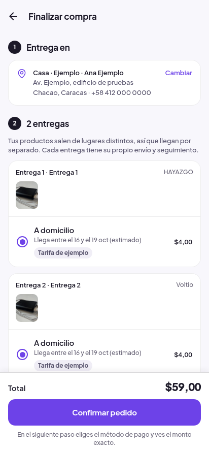
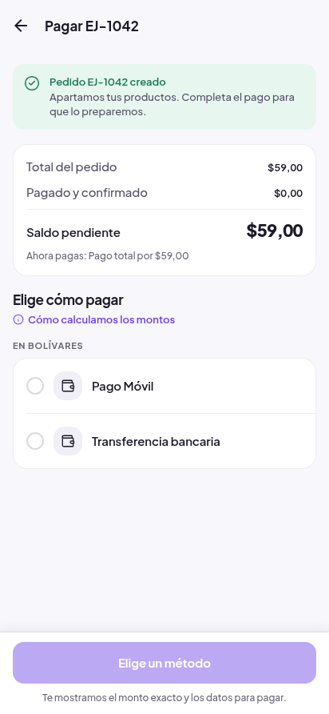
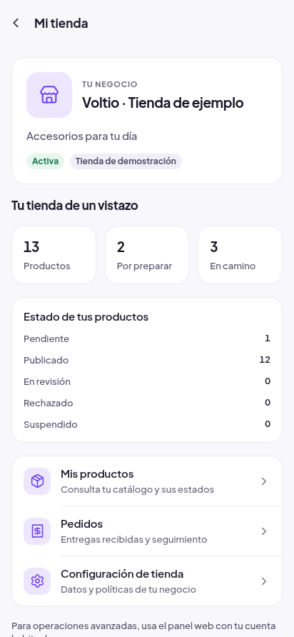
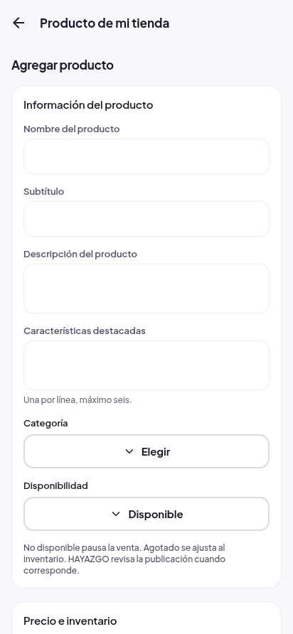
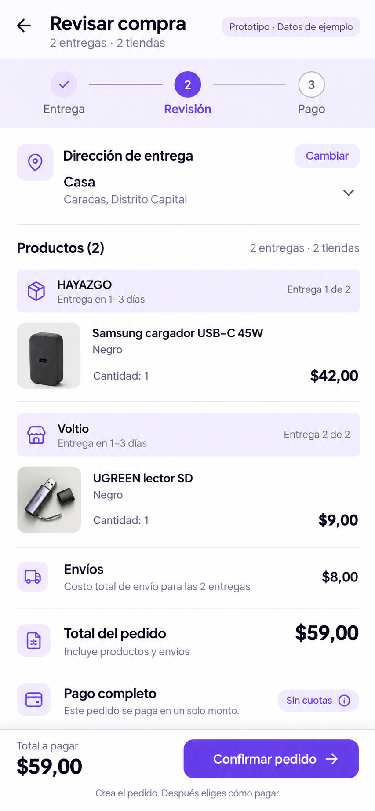
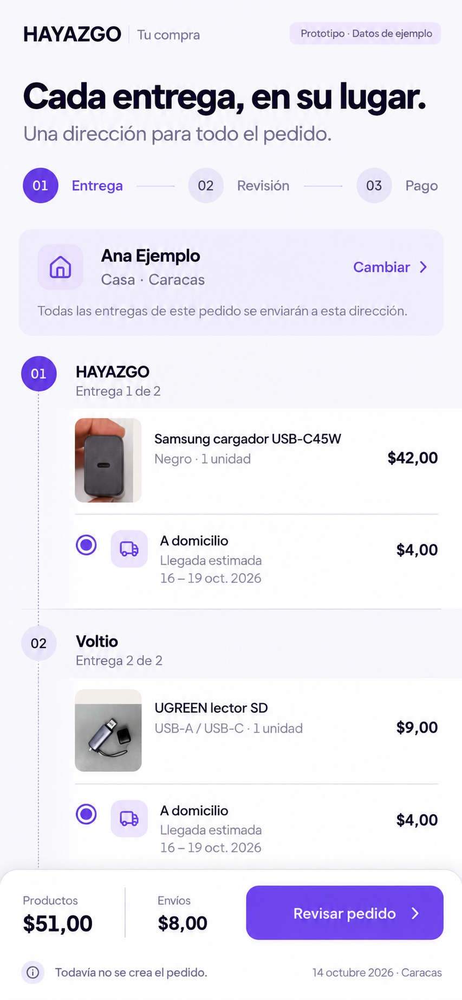

A
Comercio fluido
Decisiones concentradas. Ediciones en hojas. Mi tienda empieza por el trabajo que necesita atención.
Recorrer A →Dos direcciones completas para unir la compra y la operación de una tienda. La misma identidad Electric Violet, dos formas distintas de organizar el trabajo.
Decisiones concentradas. Ediciones en hojas. Mi tienda empieza por el trabajo que necesita atención.
Recorrer A →Compra por etapas. Entregas y compromisos visibles. Mi tienda separa atención, catálogo y perfil del negocio.
Recorrer B →Compra: dirección, entregas, plan y resumen compiten en una página larga. El paso siguiente cambia de tarea, tono y jerarquía al pagar.
Mi tienda: la primera vista dedica espacio a identidad, contadores y estados de moderación antes de llevarte al pedido o producto que debes atender.
Inspección focalizada de la interfaz actual con respuestas representativas interceptadas; sin conexión al backend. Evidencia nueva de ocho vistas. No es una prueba de operación en Android ni una auditoría histórica.
Ver evidencia actual →Empieza por el carrito o por Cuenta. Los botones dentro de cada maqueta navegan y abren las hojas. Puedes saltar a cualquier pantalla para compararlas.
Carrito → Revisión editable → Pago → Estado
Carrito
Carrito → Entrega → Revisión → Pago → Estado
Carrito
Cada imagen es una maqueta capturada del prototipo, no una pantalla instalada en la app. Toca una para verla completa o recorrer ese estado.
| Decisión | A · Comercio fluido | B · Comercio estructurado |
|---|---|---|
| Compra | Una revisión central; dirección, entregas y plan editables. Menos cambios de pantalla. | Entrega y revisión separadas. Más orientación antes de asumir el compromiso. |
| Pago | La cotización sustituye la selección en una superficie compacta del mismo pedido. | Se distingue método, instrucciones y estado dentro del contexto del pedido. |
| Mi tienda | Atención como inicio. Cola operativa y accesos breves a catálogo y tienda. | Resumen organizado por Atención, Catálogo y Tienda; espacios dedicados de pedidos y productos. |
| Editor | Resumen de ficha con hojas para contenido, venta y fotos. | Secciones Contenido / Venta / Fotos y un solo guardado. |
| Ventaja | Rápida para repetir tareas y revisar una compra conocida. | Da contexto a compradores y vendedores con decisiones menos frecuentes. |
| Coste de uso | Las hojas exigen recordar el contexto. Riesgo de esconder detalles si los resúmenes son pobres. | Una transición adicional en checkout y mayor estructura de navegación. |
| Implementación futura | Separar editor/checkout en resúmenes y hojas; gestionar teclado, foco y cambios locales. | Separar Entrega/Revisión sin duplicar estado; crear navegación contextual del negocio. |
B hace explícitas las responsabilidades del marketplace multientrega y permite crecer sin una pantalla interminable. A reduce transiciones y conviene a quien repite tareas; el especialista de operaciones destaca esa ventaja. Ninguna dirección está implementada ni aprobada por el propietario.
Dictamen independiente y límites de verificación: consulta el informe de la entrega. Sin pruebas con participantes reales.
Electric Violet, Plus Jakarta Sans, iconos actuales, fotografía autorizada y dirección C de Inicio. También los contratos de carrito, grupos de entrega, pedido, cotización, reportes y estados.
Componentes reutilizables: BottomBar, Sheet, ConfirmSheet, RadioRow, SummaryRow, RateSheet, campos, indicadores de carga/error y advertencia de cambios sin guardar.
Composición, resúmenes editables, navegación del checkout y espacios del vendedor. Habría que conservar un estado de flujo común y revalidar al cambiar dirección o reanudar un pedido.
No se proponen fórmulas nuevas, aprobación de pagos desde el vendedor, envío unificado, direcciones distintas por grupo, borrador remoto o analítica inventada.
Pedido y pago: crear pedido aparta inventario y vacía carrito. Reportar no confirma dinero; pendiente/procesando bloquea otro intento. El rechazo permite recuperación solo cuando el servidor lo autorice.
Multivendedor: una tienda puede tener varias entregas. La dirección es común; costo y modalidad son por grupo. El ejemplo tiene dos grupos; no se promete un envío único.
Planes: el pedido mixto de $59 usa pago completo. Los ejemplos alternativos de anticipo y tres partes están identificados como carritos elegibles independientes, con fechas desde la creación. Importes, recargos y fechas los decide el servidor.
Monedas: las obligaciones permanecen en USD. La referencia VES histórica de 877,90 Bs/USD proviene de la evidencia ya registrada el 14 de octubre; las cotizaciones del prototipo son simuladas y no sirven para pagar. Zelle/USDT no reciben importes inventados ni la cotización de otro método.
Vendedor: solo sus entregas y acciones permitidas por estado/pago; sin confirmar cobros, sin total de otros vendedores. Guía requerida para despacho cuando corresponde. Guardar producto no garantiza publicación. No se promete edición masiva ni borrador remoto.
Alcance: navegación, estados y revisión visual de prototipos web; no rendimiento nativo, TalkBack ni investigación con usuarios reales. No se tocó la app, Supabase, Android preview, production o iOS.
Capturas nuevas del código actual exportado. Se bloquearon las conexiones externas y se inyectaron datos representativos para inspeccionar pantallas sin afectar servicios. No equivalen a pruebas operativas del servidor.




Apple aporta feedback contextual y uso cuidadoso de hojas; Baymard, resúmenes editables y revisión antes del compromiso. Son principios adaptados a HAYAZGO, no copias visuales ni prueba de que una dirección convierte mejor.
Apple · Feedback ↗Apple · Modality ↗Baymard · Resúmenes de checkout ↗Baymard · Compra y revisión ↗Imágenes conceptuales generadas, no capturas ni fotografías de producción. Las maquetas precisas de 412/320 están arriba; no se deformaron estas exploraciones para fingir ese tamaño.

